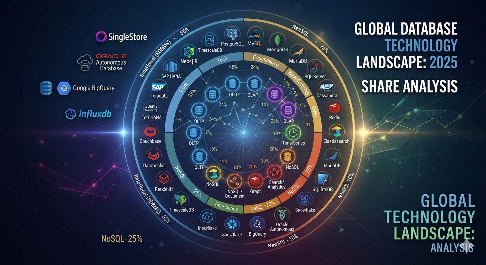

Visual Analytics Architecture Generated Courtesy of Google Gemini Model
The modern enterprise data ecosystem is undergoing a massive, decentralized transformation. Driven by the rise of non-deterministic AI agents, distributed cloud topologies, and the constant demand for sub-second streaming analytics, the traditional approach of relying on a single, monolithic database is no longer viable.
Today's software architects must navigate a complex, highly specialized data terrain where transaction safety, flexible data schemas, and analytical processing speed are constantly competing for priority.
Whether your system requires:
Making the right choice is critical to operational success. In this comprehensive technical guide, we open up the engineering core of the industry's 25 most impactful databases—mapping out their unique internal storage frameworks, specialized indexing mechanics, and exact production use cases to help you choose the ideal data engine for your workload.
1. What is the fundamental difference between Distributed SQL (NewSQL) and traditional RDBMS?
Traditional RDBMS systems (like Oracle or PostgreSQL) are fundamentally built for scale-up architectures, relying on single-node dominance or primary-replica replication where write workloads hit a single primary instance. Distributed SQL (like YugabyteDB or TiDB) splits computing from storage entirely and shards rows natively across an entire multi-node cluster using consensus protocols like Raft. This allows Distributed SQL to deliver horizontal scale-out write capacity and continuous multi-region fault tolerance without losing the strict transactional ACID compliance that traditional databases provide.
2. When should I choose a Document NoSQL database over a relational database?
You should select a Document NoSQL database (like MongoDB or Couchbase) when your data model is fluid, rapidly evolving, or inherently hierarchical (such as e-commerce product catalogs or dynamic user profiles). Because Document stores save data in native JSON or BSON formats, they eliminate the strict schema migrations, table joins, and object-relational mapping (ORM) bottlenecks found in relational setups. However, if your application relies on complex multi-table relationships, strict financial balances, and absolute consistency across multiple unrelated entities, a relational database remains the safer choice.
3. Why are real-time OLAP engines like ClickHouse replacing traditional Data Warehouses for live metrics?
Traditional cloud data warehouses (like Google BigQuery or Amazon Redshift) are optimized for large-scale, historical, batch-processed analytical queries, where computing power is scaled up to scan petabytes of data on demand. Real-time OLAP engines (like ClickHouse, Apache Pinot, or StarRocks) are specialized for streaming ingestion and immediate analytics, utilizing vectorized execution (SIMD instructions) and specialized columnar indexing to run aggregations over billions of rows in sub-seconds. This makes them ideal for live analytics like clickstream trackers, network security dashboards, and real-time fraud engines where waiting for a batch process is impossible.
4. How do In-Memory databases guarantee data durability if the server crashes?
While traditional caching layers store data strictly in volatile RAM and risk losing data during power losses, modern enterprise In-Memory databases (like Amazon MemoryDB) implement a multi-layered durability model. They keep the active state in memory for ultra-fast, microsecond-level read execution, but write every transaction to a durable, distributed write-ahead log (WAL) on disk before sending a success confirmation back to the application. If a node crashes, the system automatically rebuilds the database state by replaying the disk-bound log, giving you caching speeds with database reliability.
5. What architectural challenge does an integrated data fabric like Microsoft Fabric solve?
The biggest challenge in enterprise analytics is data fragmentation, where identical data is copied, transformed, and moved between isolated storage silos (like data lakes, engineering spaces, and analytical data warehouses), causing massive storage costs and sync delays. An integrated data fabric solves this by introducing a unified, central data lake storage layer (such as OneLake) that stores all enterprise data exactly once in an open format like Apache Iceberg or Delta Lake. Different analytical tools can then query the exact same file simultaneously, eliminating slow ETL pipelines, lowering cloud storage costs, and ensuring uniform data governance across the company.